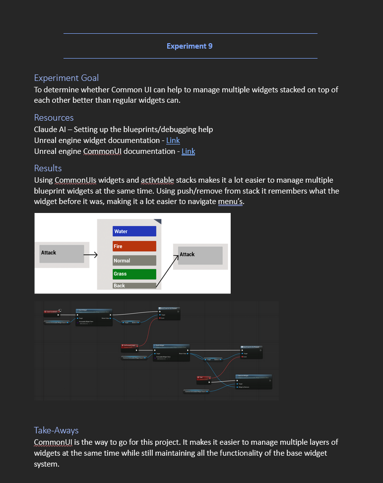
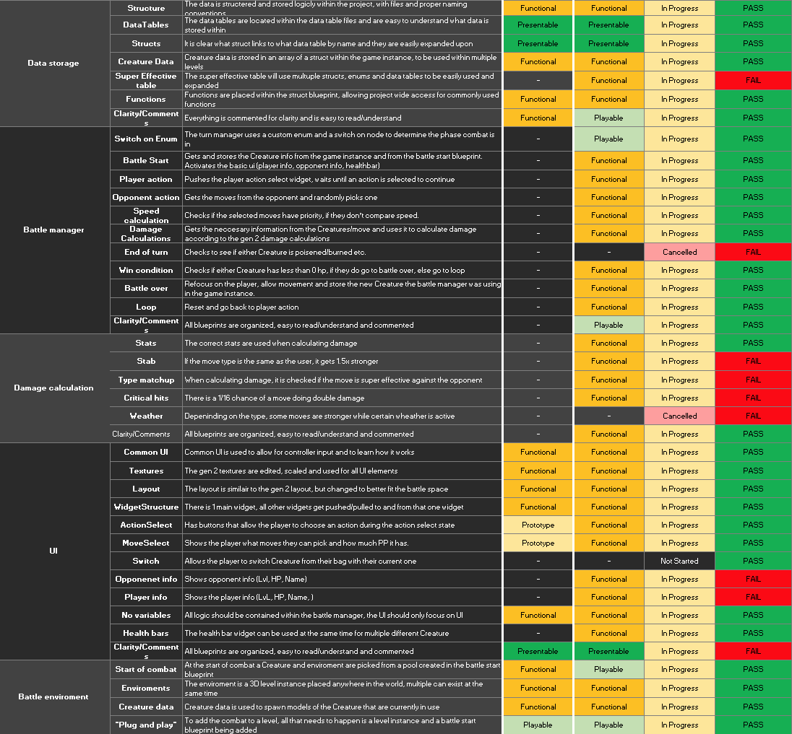
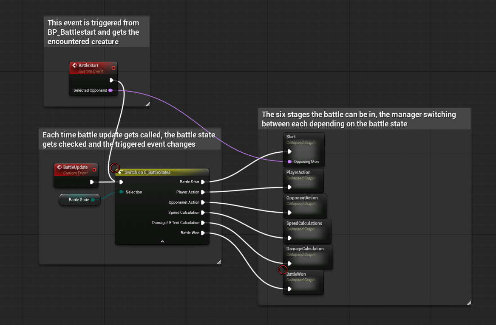
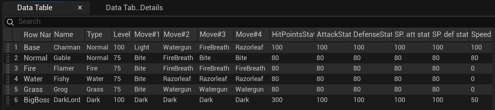

A turn based combat tool
A modular turn-based combat system for Unreal Engine 5, built solo in 8 weeks. Other developers can add it to their existing projects and adapt it to fit their game.
Overview
Goal: break down the turn-based combat of an existing game and rebuild it as a plug-in other developers can add to their projects.
Main focus: modularity. Every part can be changed to fit the user's own use-case.
What I did
- Built a custom turn-based combat plug-in
- Researched various ways to implement features to determine which is optimal
- Wrote the back-end logic for the various calculations taking place
- Created the data structure that stores all the data in one place
- Added a way to easily add custom arenas
- Added functional battle UI
Design process
Research
- Player experience: a pattern analysis gave me "Time to strategize": combat pauses on the player's turn so they can weigh all their options.
- Hidden mechanics: stats like DVs and StatEXP serve casual and competitive players at the same time. You don't need them to win, but they give an edge if you know them.
- Damage formula: dissected variable by variable, to know exactly what each part does.
- Tech research: small experiments to find the best way to build each part, like the UI example below.

- Intention
- The battle menu has layers: pick Attack, then a move, or go back. Each layer has to open and close in the right order.
- Question
- Can CommonUI manage widgets stacked on top of each other better than regular widgets?
- Why
- An earlier experiment showed regular widgets work well for battle information and input, but activating several at once was a headache.
- Result
- CommonUI's activatable stacks remember the previous widget when you push or remove one, which makes navigating menus a lot easier.
- Applied
- The battle UI is built with CommonUI, then still an experimental feature.
Plan
- Conditions of Satisfaction: based on the research, with a clear goal for each week.
- One system at a time: with many systems depending on each other, the CoS made it possible to finish one part before starting the next, instead of working on everything at once.

Build
- Battle manager: holds most of the logic; other blueprints only send it input. The move-select UI only tells it which move was picked, and the manager handles the rest.
- Data: every creature lives in one data table.
- Structure: battle logic, data and UI in their own folders, Perforce for version control, and regular builds to keep the project stable.


Playtest
- Demo level: shows how different creatures, moves and types interact.
- Two playtest sessions: watching others play through it, then balancing both the level and the system based on their feedback.
- Three versions of the demo level in total.
Challenges & what I learned
Scope: recreating every battle mechanic was too much. Research decided what to cut: StatEXP and DVs make every creature feel unique, but without a catching or switching system they can't shine. Playtests confirmed the cuts.
Direction: the goal shifted from a complete tool others could pick up and use, to a strong foundation they can build on. Tech research and a how-to document support that shift, and testers understood how the system worked and got excited to create new content.